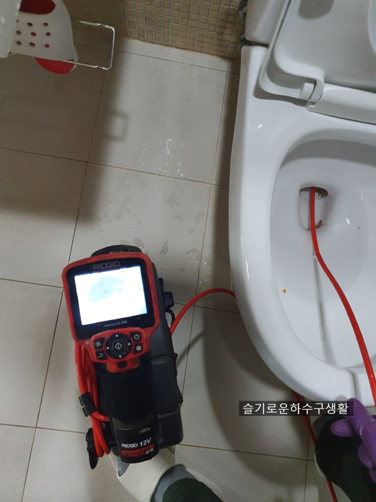
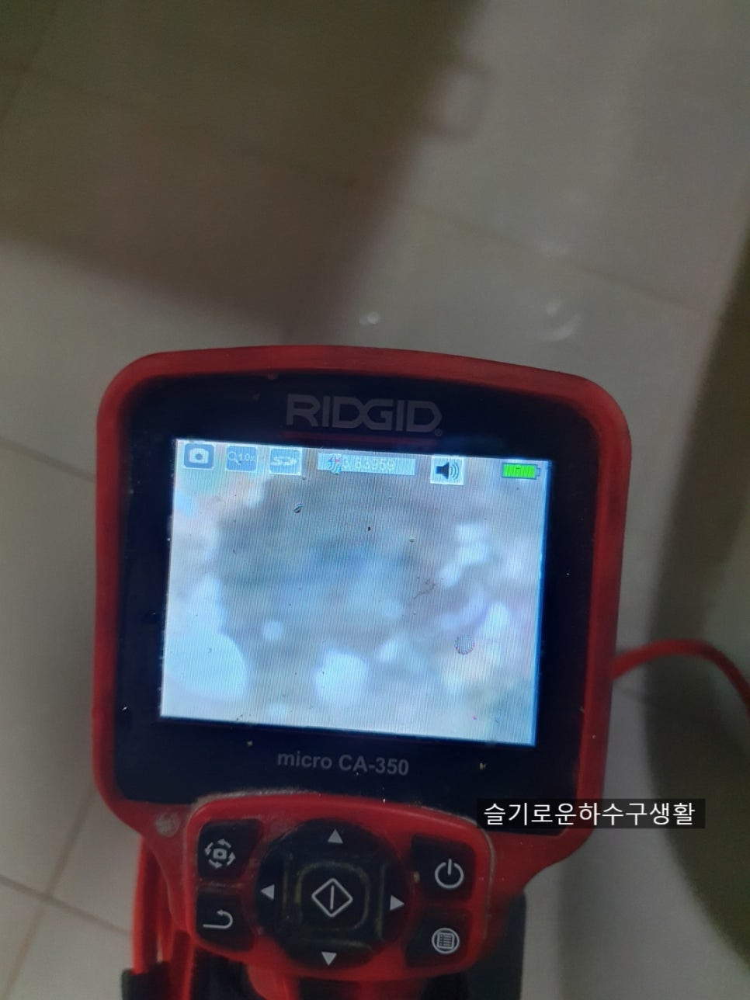
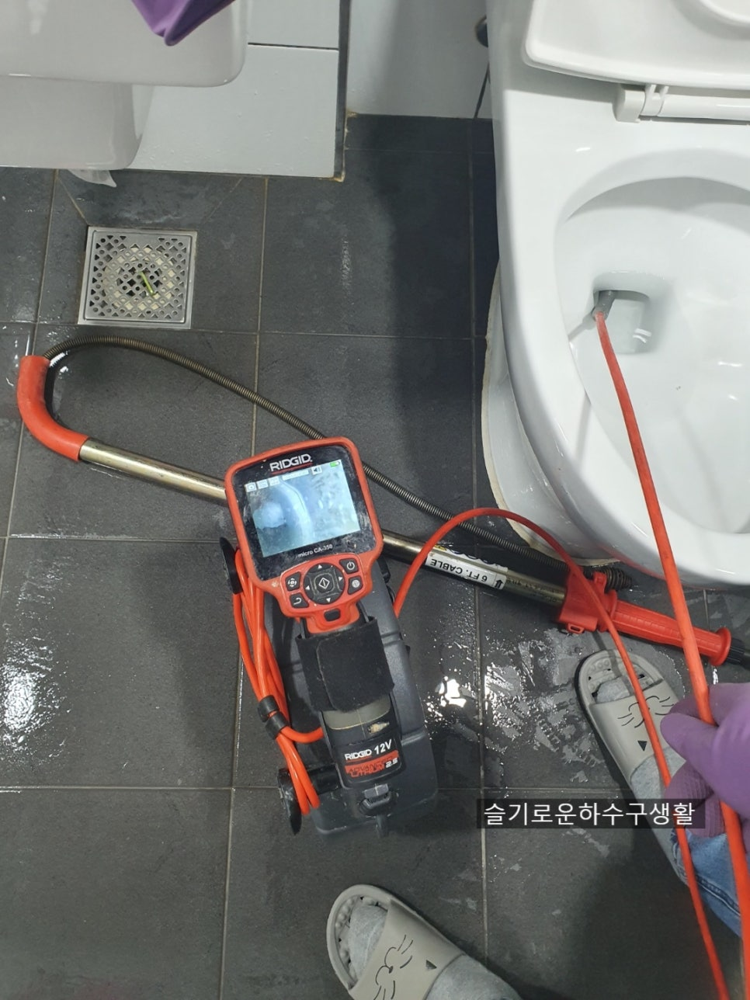
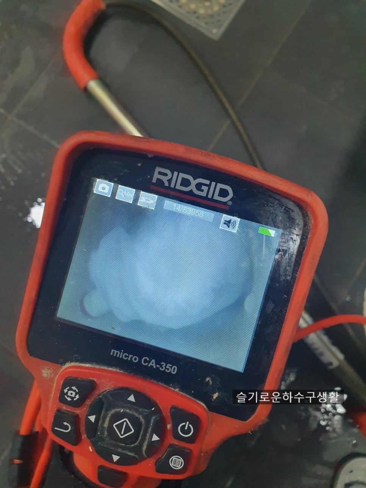
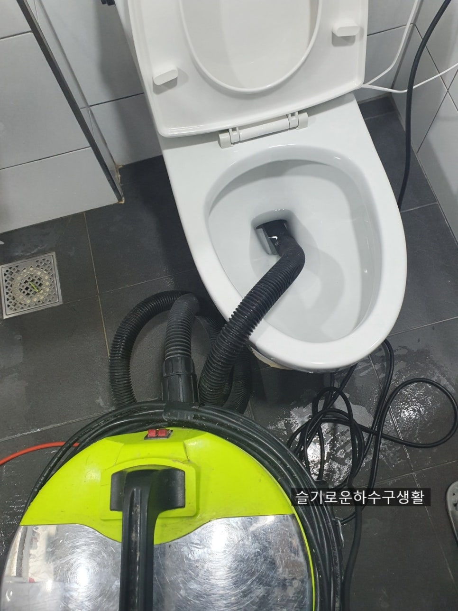
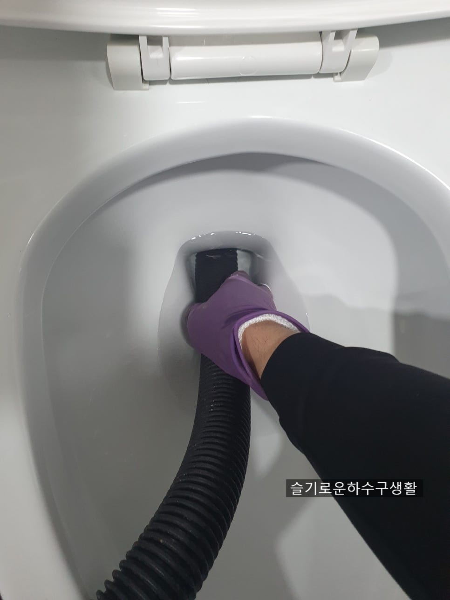

🏠 수원변기막힘 변기볼팬 빼내기 권선구 영통구 변기뚫음
수원 변기막힘 전문 시공 후기

📋 작업 개요
- 위치: 수원
- 서비스 유형: 변기막힘, 하수구막힘, 배관막힘, 뚫는업체
- 작업 일시: 2021. 6. 2. 0:03
- 업체명: 하수구수사대 (010-5615-2118)
🔍 문제 상황
안녕하세요 ^^
아직까진 날씨가 그리 덥지않은데
조금만 움직이면 더워지니
올여름에도 폭염이 예상되네요^^
오늘은 권선구변기막힘 아파트에서
연락이 왔는데요
고객님께서 직접 뚫기도 해봤는데
소변 볼때는 괜찮은데
대변을 보거나 휴지를
넣으면 자주막힌다는 증상입니다.
여러분도 이런증상이 있다면
글을 끝까지 읽어보시길 바랍니다.
수원변기막힘 변기볼팬 빼내기
권선구 영통구 변기뚫음
작업전 물을내린사진
우선 작업전에 물을 내려
증상을 봅니다.
역시 물이 차오르고 아주
천천히 빠지고는 있지만
안에 무언가가 꽉 막고 있는것이
확실하네요.
내시경검수
확실한 작업을 위해
내시경으로 확인해줍니다.
보통 막혀있으면
관통기라는 장비로
뚫기도 하지만

🔎 원인 분석
💡 전문가 진단: 수원변기막힘 변기볼팬 빼내기 권선구 영통구 변기뚫음
물이 맑은상태에서는
관통기 장비보다는
우선 내시경 검수를 먼저
해보는것도 좋습니다.
내시경으로 변기 내부를
들여다보니 무언가 꽉 막고
있는것이 보여집니다.
관통기후 내시경검수
우선 배관안에 막고있는것이 변처럼
보여지기 때문에
석션보다는 관통기로 먼저
통수를 시켜준후 내시경으로
다시 확인을 해주었습니다.
권선구변기막힘 처럼 대변처럼
보여지는 현장에서
석션으로 흡입하면 엄청난 대변
냄새때문에 집안 전체가 떵 냄새로
가득할수 있기 때문에
되도록이면 관통기로 변을 배관 밖으로
밀어내는것이 좋습니다.
2차내시경검수
관통기 작업후 다시 넣어보니
네임팬이 변기 배관중앙을
가로막고 있고 거기에 휴지가
걸려있네요
보통 이렇게 볼펜이나 이물질이
들어가면 비슷한 증상이 일어납니다.
뚜러펑이나 압축기 또는 철물점에서

🔧 작업 과정
파는 스프링같은 걸로
직접 집에서 뚫다보면
물은 내려가고 소변도 역시 내려갑니다.
하지만 사진처럼 직접적인 원인인
이물질이 제거되지 않는다면
대변을 보거나 휴지를 넣을때마다
막힐수 밖에 없습니다.
권선구변기막힘 처럼 막힘현상이
반복이 되다면 내시경으로 변기배관을
보는걸 추천드립니다.
변기안에 이물질제거를 위해
석션작업을 진행하였습니다.
네임팬이 다행히 깊게 들어가지
않아 금방나올거 같습니다.
만약 변기 깊숙한곳에 들어간다면
빼기가 쉽지 않습니다.
변기 밑에 정심이라는 부속이 들어가는데
그곳까지 이물질이 들어가게되면
배관안에서 공기가 유입되어
쉽게 나오지 않기도 합니다.
권선구변기막힘은 다행히
첫번째s자 넘어가기 직전에 걸려있네요
네임팬 빼냄
오늘의 주인공입니다 ㅎㅎ
보통 이물질이 들어가는
원인을 고객님들께 들어보면
변기물을 내리는 동시에 고개를 숙이거나
몸을 틀면서 물건을 건들여
떨어지면서 손쓸새 없이
빨려 들어간다고 하더라구요.
원인인 네임팬도 제거 되었으니
마지막으로 내시경검수를
진행합니다.
권선구변기막힘 원인인
네임팬을 빼고 난후 촬영합니다.
깨끗하네요.
오른쪽사진을 보면 까만 구멍이 보이시죠?
저기로 대변이나 휴지가
빨려나가는데
간혹 면봉때문에 막히는 경우도
있습니다 ㅜㅜ
그러니 제발 변기에는 이물질은
넣지 말아주세요^^
휴지를 넣어서 테스트를


✅ 작업 완료
해줍니다.
내시경으로 확인해서 완벽하게
뚫렸지만 그래도
이렇게 한번데 해주는것이 속도
시원합니다.
권선구변기막힘 완벽해결!!
오늘도 수고많으셨고
이상 "하수구수사대" 였습니다.
하수구수사대
010-2340-2118
서울/경기/인천 전지역 출장가능




⚠️ 하수구 배관 막힘 예방 및 관리 가이드
- ✅ 머리카락, 비닐, 물티슈 등 물에 분해되지 않는 이물질은 하수구 유입을 절대 금지해 주세요.
- ✅ 하수구 거름망을 씌우고 모여진 이물질은 주기적으로 쓰레기통에 바로 비워주셔야 합니다.
- ✅ 배관 노후가 심할 경우 이물질이 더 쉽게 걸리므로 주기적인 배관 세척(고압세척 등)을 권장합니다.
- ✅ 작업 후 1년 이내 재발 시 하수구수사대에서 무상 A/S 보증 서비스를 제공합니다.
💡 핵심 정리
- 확실한 장비 작업(내시경 점검 및 샤프트 스케일링)으로 원인을 뿌리 뽑습니다.
- 작업 후 1년 이내에 동일한 부위 재발 시 100% 무상 A/S 서비스를 보장합니다.
- 서울 · 경기 · 인천 전 지역에 24시간 언제든 긴급 출동할 수 있도록 항시 대기 중입니다.
❓ 자주 묻는 질문 (FAQ)
🚨 수원 변기막힘 문제로 고민이신가요?
정확한 원인 진단과 확실한 시공으로 재발 없는 해결을 약속드립니다.
24시간 긴급 출동 | 서울 · 경기 · 인천 전지역 | 1년 내 재발 시 무상 A/S